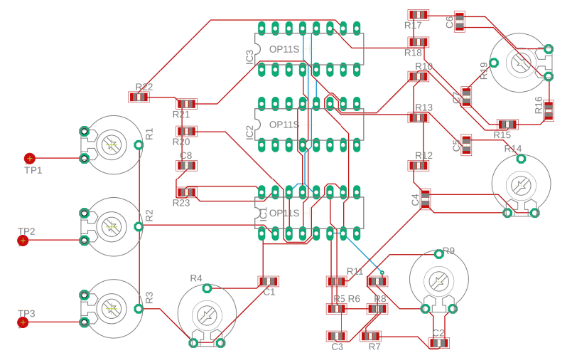
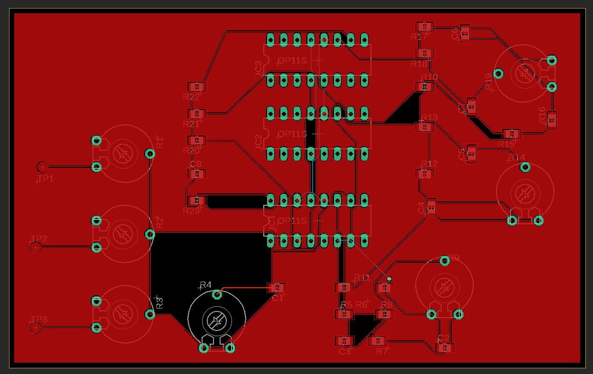
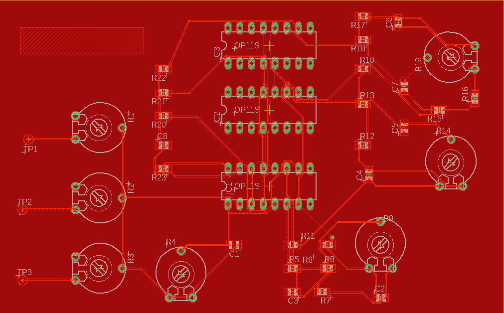

Current Projects
PCB Design
During my time at UW, I heard many complains from my classmates about the lack of PCB design courses at UW. During my senior year, we had an town hall meeting to address electrical engineering courses. During this meeting, many students revealed their discontent with the lack of PCB design courses. EE 201 - Computer Hardware Skills was produced as a result.
I find it neccessary to learn and print PCBs. I have experience designign and etching circuit boards by hand, and I was excited to finally print and populate a real PCB.
I could not imagine a better PCB practice circuit than my EE 233 project - a 3-way audio mixer.
This is my first trace design using Eagle CAD. The potentiometers on the left are to adjust the volume of the three input songs. The bottom and right potentiometers are for adjusting the overall volume and frequency volume (high, medium, low).
Routing was an interesting experience that took a few tries. I started with the AutoRouter, and -- while it 'worked' -- it was not ideal. I started over and manually routed the ICs and potentiometers before AutoRouting the passive components.
I am adding a bottom silk layer that says my name, date, and the project's name. And with that, they are off to printing!
Embedded Systems
I enrolled in EE 474 - Embedded Systems during the Summer 2020 pandemic in addition to Introduction to Machine Learning and Data Structures and Algorithms. I also started my job at Subway. Unfortunately, the course was too much for me, and I dropped it, thinking my capstone would be an in-person, embedded focused project in Spring 2021.
Unfortunately, things did not turn out that way, and I am going back to relearn the material! Fortunately, there are many tutorials and resources available to learn embedded systems! I will be following a tutorial by Mr. Dr. Prof. Bolt.
Bolt blogs his process in designing a top-down shooter for a business card. I will be designing a business card to show in interviews, however, I prefer to implement Pong. I will describe my processes, code, and concepts to help those who might not understand Bolt's explanations.